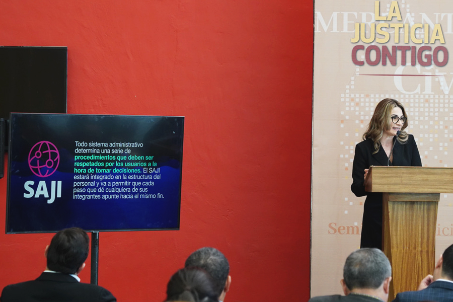

PRIORIZAMOS EL USO DE TECNOLOGÍAS PARA ACERCAR NUESTROS SERVICIOS A LA SOCIEDAD, ACTUALIZANDO NUESTROS SISTEMAS Y MANTENIENDO UNA INTERACCIÓN CON NUESTROS USUARIOS A TRAVÉS DE APLICACIONES Y PLATAFORMAS
El aprovechamiento de las nuevas tecnologías nos posibilita acercar nuestros servicios a la sociedad. Hoy en día el Poder Judicial se encamina hacia una ruta más eficiente y moderna en la que, mediante la puesta en marcha de sistemas informáticos y de consulta, permitimos que las y los justiciables realicen sus trámites de una manera más ágil y rápida.
Con la adopción del Nuevo Modelo de Justicia nos propusimos actualizar nuestros sistemas de gestión con la finalidad de automatizar procesos y ser cada vez más eficientes en las respuestas que la ciudadanía espera, mantenemos el firme compromiso de innovar, dar el soporte técnico adecuado y mantenimiento a las herramientas digitales que diseñamos. Reafirmamos nuestro propósito por difundir los temas de interés, ser proactivos en la información que proporcionamos a través de nuestro sitio web, y dar a conocer a las y los usuarios la publicación de las listas de acuerdos, las versiones públicas de las sentencias ejecutoriadas, los edictos, tesis y jurisprudencias emitidas, entre otros rubros.
En este apartado hacemos una reseña de las principales aplicaciones y plataformas con las que contamos y que ponemos a disposición de los justiciables como una herramienta de interacción con este poder público.
Fomentamos el uso de las tecnologías en todas las áreas que nos competen, es por ello que mediante el Sistema de Capacitaciones y Profesionalización del Poder Judicial (SICAP), ofertamos cursos de capacitación, difundimos las convocatorias emitidas además de resultar un instrumento útil de evaluación.
Las acciones aquí presentadas están orientadas a mejorar las prácticas cotidianas dentro del Poder Judicial, es por ello que buscamos mantenernos a la vanguardia en la incorporación de los avances tecnológicos en los procesos jurisdiccionales y administrativos.
IMPLEMENTACIÓN DEL SISTEMA DE ADMINISTRACIÓN DE JUSTICIA INTELIGENTE (SAJI)
El Sistema de Administración de Justicia Inteligente (SAJI) es una plataforma de gestión judicial de última generación, la cual permite optimizar los procesos enfocados en ofrecer a la ciudadanía una justicia pronta, expedita, innovadora, transparente y abierta.
El objetivo de esta herramienta tecnológica es sustituir el Sistema de Gestión (SIGE) y la Plataforma de Administración e Impartición Integral de Justicia (PAIIJ), e instalarlo en órganos jurisdiccionales que aún no cuentan con un sistema de gestión. Con estas acciones y la disponibilidad del Motor de Firma Electrónica avanzamos en el cumplimiento de la política de cero papel en el Poder Judicial.
Iniciamos la implementación del SAJI en el Tribunal de Conciliación y Arbitraje (TCA) y los Tribunales Laborales, con jornadas de consultoría al personal de las cuales obtuvimos las necesidades para el desarrollo y puesta en marcha del sistema.
SISTEMAS DE GESTIÓN JUDICIAL
Actualmente los sistemas de Gestión Judicial PAIIJ y SIGE instalados en los órganos jurisdiccionales de primera instancia dan a servicio a 937 usuarios, a través de los cuales se gestionan diferentes trámites de los cuales se recibieron 559 mil 362 trámites o documentos y se realizaron 616 mil 798 acuerdos dentro de estos sistemas.
SITIO WEB
Con la finalidad de aproximar los servicios que brindamos y ofrecer información accesible sobre nuestro quehacer, en el Poder Judicial contamos con el sitio web www.pjecz.gob.mx, en 2022 contabilizamos cuatro mil visitas diarias a nuestro sitio, resaltando que 61 por ciento lo realizó mediante un dispositivo móvil.
PLATAFORMA WEB

Para garantizar el resguardo de la información con la que contamos y además ofrecer un servicio ágil y de calidad, contamos con la Plataforma Web, a través de la cual administramos, difundimos y alojamos documentos e información como el registro de abogadas y abogados litigantes, la agenda de audiencias, la publicación de edictos, glosas, listas de acuerdos, peritos, tesis y jurisprudencias, búsqueda y localización de expedientes, y las versiones públicas de las sentencias. Con esta herramienta tecnológica facilitamos la realización de consultas por parte de nuestros usuarios.
En 2022, publicamos 14 mil 584 listas de acuerdos, 14 mil 213 sentencias en sus versiones públicas y 11 mil 376 edictos.
Dentro de esta misma plataforma, desarrollamos un módulo para revisar y actualizar el inventario del equipo de cómputo con el que se cuenta en el Poder Judicial, esta acción nos permite alimentar la información detallada de cada equipo y relacionarlo con el servidor público que lo tiene en custodia.
Tabla 33. Documentos y trámites recibidos y acuerdos realizados a través de los Sistemas de Gestión Judicial del PJECZ
| DISTRITO JUDICIAL | Documentos o trámites recibidos | SIGE Acuerdos realizados | SIGE Documentos o trámites recibidos | PAIIJ FAMILIAR Y PENAL Acuerdos realizados | PAIIJ FAMILIAR Y PENAL Documentos o trámites recibidos | TOTAL Acuerdos realizados |
|---|---|---|---|---|---|---|
| Acuña | 7781 | 7353 | 10965 | 13775 | 18746 | 21128 |
| Monclova | 45022 | 44309 | 26561 | 35751 | 71583 | 80060 |
| Parras de la Fuente | 7836 | 5986 | 2536 | 2910 | 10372 | 8896 |
| Región Carbonífera | 9340 | 8902 | 7407 | 8495 | 16747 | 17397 |
| Río Grande | 15045 | 16564 | 12288 | 19288 | 27333 | 35852 |
| Saltillo | 150813 | 142755 | 66654 | 78550 | 217467 | 221305 |
| San Pedro de las Colonias | 10615 | 9960 | 7101 | 10009 | 17716 | 19969 |
| Torreón | 130939 | 151854 | 48459 | 60337 | 179398 | 212191 |
| Total | 377391 | 387683 | 181971 | 229115 | 559362 | 616798 |
Fuente: Dirección de Innovación de la Oficialía Mayor. Poder Judicial del Estado de Coahuila de Zaragoza. 2022.
SISTEMA INTEGRAL DE CALIDAD Y GESTIÓN DOCUMENTAL (SICGD)
Desarrollamos el sistema para auxiliar en la elaboración y control de documentos y registros del Sistema Integral de Calidad y Gestión Documental (SICGD), el cual provee mecanismos para la revisión, aprobación y disposición de los procedimientos y formatos. A esta fecha, han sido aprobados 23 procedimientos que integran un total de 110 formatos, mismos que están disponibles para su consulta digital y descarga en Plataforma Web.
PODER EN LÍNEA V2
Desarrollamos la nueva versión de Poder en Línea V2, la cual cuenta con mayor seguridad y estructura. Con esta nueva versión presentamos el sitio web Poder en Línea, desde el cual se puede agendar una cita, enviar promociones o demandas, visualizar expediente virtual y hacer boletas de notificaciones actuariales; además AppToken, la cual proporcionará las claves que se solicitan dentro del sistema para realización de trámites por buzón electrónico.
Destacamos que en 2022 dejamos de realizar citas para el Registro de Buzón Electrónico, toda vez que actualmente dicho trámite se lleva a cabo a través del sitio web del Poder Judicial.
Tabla 34. Cantidad de citas agendadas en Poder en Línea, por trámite
| Trámite | 2020 | 2021 | 2022 |
|---|---|---|---|
| Revisión de expedientes | 41866 | 38700 | 143553 |
| Tramitación de oficios/edictos/exhortos | 7039 | 6930 | 13062 |
| Citas con actuarios | 4208 | 2505 | 10272 |
| Expedición de copias certificadas | 1148 | 1004 | 2936 |
| Devolución de documentos | 2101 | 1746 | 3851 |
| Entregas de cheques y certificados de depósito | 807 | 718 | 1533 |
| Cita con juez | 2226 | 2472 | 3535 |
| Ratificaciones | 4893 | 5171 | 8518 |
| Entrega de promociones en Oficialía de Buzón Electrónico | 20 | 16 | 157 |
| Expedición de copia simple | 293 | 332 | 859 |
| Citas para Registro de Buzón Electrónico | 1709 | 1778 | Registro en sitio web |
| Entrega de demandas iniciales y anexos | 1515 | 538 | 10490 |
| Total | 67825 | 61910 | 198766 |
Fuente: Dirección de Innovación de la Oficialía Mayor. Poder Judicial del Estado de Coahuila de Zaragoza. 2022.
EXPEDIENTE VIRTUAL 2.0
Mejoramos la aplicación Expediente Virtual, y este año en su versión 2.0 enlazamos nuestros sistemas de gestión para mejorar la consulta de la versión electrónica de los expedientes además de ofrecer mayor agilidad en las consultas.
Tabla 35. Expedientes autorizados mediante la plataforma expediente virtual 2.0, por distrito judicial.
| Distrito Judicial | 2020 | 2021 | 2022 | Expedientes autorizados |
|---|---|---|---|---|
| Acuña | 191 | 855 | 914 | 1960 |
| Monclova | 975 | 2025 | 5147 | 8147 |
| Parras de la Fuente | 24 | 260 | 856 | 1140 |
| Región Carbonífera | 581 | 1670 | 1373 | 3624 |
| Río Grande | 1238 | 1891 | 3379 | 6508 |
| Saltillo | 5022 | 9112 | 21297 | 35431 |
| San Pedro de las Colonias | 122 | 466 | 1131 | 1719 |
| Torreón | 1509 | 7052 | 19206 | 27767 |
| Total | 9662 | 23331 | 53303 | 86296 |
Fuente: Dirección de Innovación de la Oficialía Mayor. Poder Judicial del Estado de Coahuila de Zaragoza. 2022.
BUZÓN ELECTRÓNICO
El Buzón Electrónico es una plataforma digital para la presentación electrónica de demandas iniciales y promociones dirigidas a los órganos jurisdiccionales de primera instancia del Poder Judicial. Este año continuamos con su mantenimiento técnico, por lo que se ha convertido en una útil herramienta para las y los abogados litigantes en la presentación de sus asuntos.
Tabla 36. Demandas iniciales o promociones recibidas en el buzón electrónico, por distrito judicial.
| Distrito Judicial | 2020 | 2021 | 2022 |
|---|---|---|---|
| Acuña | 880 | 5739 | 14038 |
| Monclova | 1539 | 10387 | 59670 |
| Parras de la fuente | 31 | 238 | 4329 |
| Región Carbonífera | 790 | 3853 | 9813 |
| Río Grande | 1543 | 6576 | 22706 |
| Saltillo | 5088 | 17504 | 158821 |
| San Pedro de las Colonias | 137 | 1819 | 12810 |
| Torreón | 4507 | 20224 | 143268 |
| Total | 14515 | 66340 | 425455 |
Fuente: Dirección de Innovación de la Oficialía Mayor. Poder Judicial del Estado de Coahuila de Zaragoza. 2022.
BOLETAS ELECTRÓNICAS DE GESTIÓN ACTUARIAL (BOLETAS DE NOTIFICACIÓN)
En 2021 pusimos en marcha el Sistema de Boletas Electrónicas de Gestión Actuarial (BEGA), herramienta tecnológica que ha resultado de gran utilidad para hacer más eficiente y ágil el trabajo de las y los notificadores, pues a través del llenado de las boletas de notificación por parte de los usuarios mediante dispositivos electrónicos es posible programar las diligencias, notificaciones y emplazamientos requeridos. Este año recibimos mediante este sistema 11 mil 915 registros lo que representa el triple de lo recibido al momento de su implementación.
SISTEMA DE CAPACITACIONES Y PROFESIONALIZACIÓN DEL PODER JUDICIAL (SICAP)
En seguimiento a las acciones de innovación este año continuamos con la operación del Sistema de Capacitaciones y Profesionalización del Poder Judicial del Estado de Coahuila de Zaragoza (SICAP), plataforma diseñada y desarrollada para la oferta de capacitación así como la aplicación digital de exámenes.
A la fecha, mediante el SICAP se han impartido 27 cursos, sumando tres mil 675 participantes en ellos. Además, de la aplicación de dos mil 555 exámenes de forma virtual y emitimos dos mil 91 constancias de capacitación o certificados a través de esta plataforma.
Tabla 37. Estadística del Sistema de Capacitaciones y Profesionalización del Poder Judicial
| Cursos y exámenes en SICAP | Participantes inscritos | Exámenes aplicados | Certificados o constancias emitidas |
|---|---|---|---|
| 27 | 3675 | 2555 | 2091 |
Fuente: Dirección de Innovación de la Oficialía Mayor. Poder Judicial del Estado de Coahuila de Zaragoza. 2022.
Dentro de las actividades implementadas a través del SICAP, destaca la aplicación del Examen de Méritos en Materia Laboral para jueces, secretarios y notificadores; mediante este sistema se recibió la documentación de los aspirantes de acuerdo la convocatoria, se asignó un proyecto de caso práctico a resolver para los aspirantes a jueces y secretarios mismo que fue evaluado en esta misma plataforma, también se vinculó a cada aspirante al examen de aptitudes en una siguiente fase y se realizó la evaluación del examen oral.
Actualmente, se encuentra disponible en el SICAP el curso denominado Mediación en línea, cuyo objetivo es la promoción de los mecanismos alternativos de solución de conflictos como un cambio de paradigma a la justicia tradicional. Este curso se integra de nueve módulos y se realiza de manera asincrónica. Asimismo, el último módulo de este curso consiste en una videoconferencia con una persona facilitadora de nuestro Centro de Medios Alternos de Solución de Controversias, quien asesora durante el proceso.
También, iniciamos el curso Actuación policial, justicia cívica y proximidad social con perspectiva de género, con el que buscamos fortalecer los conocimientos y habilidades de los elementos de las instituciones de seguridad pública a efecto de que su actuación se desarrolle dentro de un marco de respeto a los derechos humanos con alto grado de eficiencia operacional. Este curso contiene 13 módulos para sumar un total de 52 horas de clase, mismas que los participantes pueden realizar en el tiempo y horario que dispongan.
SERVICIOS DE SOPORTE TÉCNICO
Dentro de las acciones realizadas para optimizar el uso de los recursos tecnológicos y mejorar la comunicación entre nuestras instalaciones, realizamos el análisis e implementación de seguridad de red LAN, pusimos en marcha la reestructuración y actualización de la red (15 VLAN) en el edificio de Oficialía Mayor con equipo existente.
Para incrementar la seguridad en red del Poder Judicial, renovamos el licenciamiento de seguridad perimetral de ruteo y antivirus que realiza un monitoreo constante para ajustes de servicios innecesarios que fomentan la inseguridad en la red mediante filtración de contenidos y restricción de acceso en redes externas.
Participamos en el análisis e implementación de redes estructuradas de voz, datos y video, salas de audiencia oral en materia civil y familiar en el edificio del Centro de Justicia de la Región Carbonífera y Tribunales Laborales, así como la expansión y modificación de áreas del Centro de Justicia de Ciudad Acuña.
A través de la Dirección de Innovación de la Oficialía Mayor del Poder Judicial, brindamos nueve mil 781 servicios de soporte técnico y asistencia remota.
EQUIPO DE TRANSMISIÓN PARA LAS SALAS ORALES
Continuamos con la puesta en práctica del Sistema Integrado de Grabación Audiovisual (SIGA) en las salas de audiencia oral, al equipar cuatro nuevas salas de oralidad para los distritos judiciales de Monclova, Río Grande, Saltillo y Torreón. Además, realizamos el mantenimiento preventivo en las salas ya instaladas.
EQUIPO DE TRANSMISIÓN PARA LAS SALAS COLEGIADAS
Realizamos labores de mantenimiento preventivo y correctivo al equipo de transmisión de las sesiones del Pleno del Tribunal Superior de Justicia, así como de las Salas Colegiadas en Materia Civil y Familiar y Penal; ofrecimos asistencia técnica para la corrección de fallas en las salas de audiencia oral y mantenimiento preventivo en las 45 salas de audiencias en la entidad.
Finalmente, iniciamos la planeación para eventualmente migrar toda esta tecnología para que se integre con el nuevo sistema de gestión SAJI.
ADQUISICIÓN DE EQUIPOS DE CÓMPUTO
Para el desempeño de las funciones del Poder Judicial es fundamental dotar al personal del equipo técnico adecuado y suficiente, proporcionar el mantenimiento necesario y renovar constantemente la infraestructura tecnológica.
Hasta inicios de 2022 estaban en servicio 89 diferentes modelos de computadoras de escritorio lo cual dificultaba su mantenimiento, soporte técnico y adquisición de refacciones. Adicionalmente, un número importante de equipos estaban próximos a alcanzar su tiempo de vida útil. Ante esta situación realizamos la compra, configuración y entrega de 550 nuevos equipos de cómputo los cuales fueron distribuidos en los distritos judiciales. Esta adquisición representa un logro sin precedente en el Poder Judicial al cambiar una tercera parte del equipo anteriormente en uso.
Tabla 38. Distribución de equipos de cómputo adquiridos, por Distrito Judicial
| Distrito Judicial | Equipos entregados |
|---|---|
| Acuña | 29 |
| Monclova | 53 |
| Parras de la Fuente | 8 |
| Región Carbonífera | 36 |
| Río Grande | 35 |
| Saltillo | 186 |
| San Pedro de las Colonias | 28 |
| Torreón | 175 |
| Total | 550 |
Fuente: Dirección de Innovación de la Oficialía Mayor. Poder Judicial del Estado de Coahuila de Zaragoza. 2022.
TELEFONÍA Y DEDICADOS
Hace un año solamente cuatro inmuebles pertenecientes al Poder Judicial contaban con telefonía conmutada, en el resto, el medio de comunicación era por línea telefónica directa y marcación a diez dígitos. Este año, con la migración al Protocolo de telefonía por Internet (Tecnología IP), mejoramos la comunicación a una forma más eficaz, fluida y segura entre las oficinas que cuentan con este servicio en los distritos judiciales del Poder Judicial del Estado, a la fecha contamos con 20 conmutadores que facilitan la comunicación entre nuestro personal.